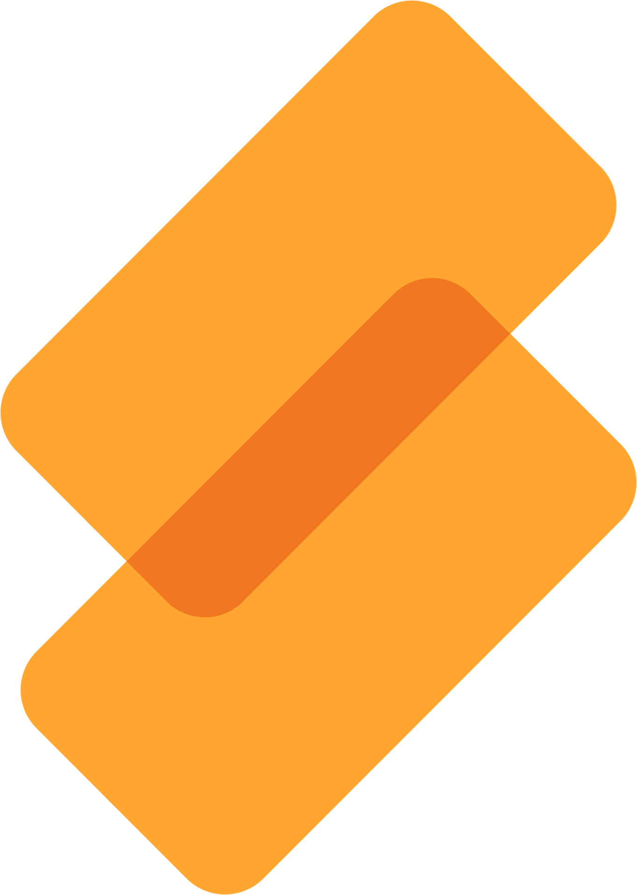

 Skarb
Home
How It Works
Use Cases
Secured With Blockchain
For Creators
Creators Page Under Construction
Skarb is fully enabled for Creators in the app. Stay tuned as we build out the website!
Back to Home